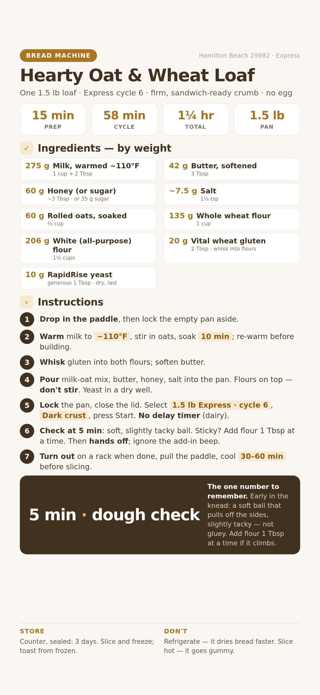

The Honeycomb loaf made nuttier and sturdier: rolled oats and whole wheat for flavor and fiber, vital wheat gluten for a firm crumb that holds peanut butter without tearing. No egg.

📱 For your phone — tap to open the full-size card, then save it to Photos.
This builds on the plain Honeycomb Express loaf with four deliberate changes, tuned so it's firmer and heartier without over-filling the 1.5 lb pan.
For one 1.5 lb Express loaf. Grams lead; volume in the small line.
Weigh if you can — flour and gluten especially. Set the pan on a scale, press zero (tare) between ingredients, and go by grams. The dough check is still your safety net if you measure by cups.
All of this except the knife came with the machine or lives in most kitchens.
Push the small metal blade onto the post in the bottom of the bread pan. It only fits one way, and the machine can't mix without it.
Warm 275 g (1 cup + 2 Tbsp) milk to about 110°F — comfortably warm, not hot. Stir in the 60 g (⅔ cup) rolled oats and let them soak 10 minutes.
Warm it back up before you buildThe milk cools while the oats soak. Check it's still around 100–110°F and reheat for a few seconds if needed. Cold liquid is the #1 cause of a dense Express loaf — the single short rise needs warm liquid to get going.
You want 42 g (3 Tbsp) butter soft enough to dent, not melted. 30–60 min on the counter, or 6–8 seconds in the microwave.
In a bowl, whisk the 135 g whole wheat flour, 206 g white flour, and 20 g vital wheat gluten together until evenly combined. This spreads the gluten so it doesn't clump.
Why the orderWet first, dry on top, yeast dead last in a dry dip. The yeast must stay dry and off the salt until mixing starts — on the short Express cycle there's no time to recover a slow start.
Into the pan (paddle in): the warm milk-and-oat mix, then the butter, then the honey, then the salt.
Spoon the whisked flour-and-gluten blend over the liquid so it covers it. Leave it sitting on top.
Press a shallow dip in the center of the flour and pour in the 10 g (generous 1 Tbsp) RapidRise yeast. Keep it dry and away from the salt.
Seat the pan until it clicks, then close the lid. If it lifts straight out, it isn't locked yet.
Press Cycle until the display shows 1.5 lb Express (cycle 6). This cycle sets the loaf size itself — there's no separate Loaf Size button.
Press Crust to Dark. Whole grain and higher hydration can read gummy in the center if under-baked, so Dark is the safe default for this loaf.
WhyThis loaf has milk and butter. Dairy sitting warm for hours can spoil — always bake right away. The whole cycle runs about 58 minutes. Keep the yeast at a full tablespoon; never cut it on this short cycle.
Early in the kneading, lift the lid and look. You want a soft ball that pulls off the sides and feels slightly tacky. Whole wheat and oats look wetter at first — give it a minute before judging.
Default correction: add flourThis dough starts a little wet on purpose. If it's slack, sticky, or climbing the sides, add flour 1 Tbsp at a time. Only add milk (1–2 tsp) if dry crumbs refuse to come together.
Hands offAfter the check, don't reopen the lid. The single Express rise is short and fragile — opening it lets out heat and can make the loaf sink.
The oats are already in the dough, so there's nothing to add when the machine beeps. Ignore it.
Express loaves run smaller and denser than Basic, and whole wheat plus oats add to that. A tight, sturdy crumb is exactly what you want for sandwiches — it's not a mistake.
When it beeps done, the machine keeps warm up to 1 hour. For the softest crust, take it out soon after. Turn the pan to unlock and lift it straight out.
Flip the pan over a wire rack and shake gently. Run a non-metal spatula around the edges if it sticks. Plastic or wood only — metal scratches the nonstick pan.
It often bakes into the bottom, leaving a small hole. Once cool enough to touch, ease it out with your fingers or a plastic tool.
Let it cool at least 30 minutes — ideally an hour. The crumb finishes setting as it cools; that's what makes it firm enough to spread on.
CounterFully cooled, store in a sealed bag or bread box up to 3 days. Don't refrigerate — it dries bread out faster.
FreezerSlice, seal in a freezer bag, and freeze. Toast slices straight from frozen. The firm crumb freezes and toasts especially well.
Raise the vital wheat gluten from 2 Tbsp to 3 Tbsp next bake — and change only that. It's the single lever for firmness. Don't fix crumble with more flour or less water.
Trim the white flour by 1–2 Tbsp, or the milk by 1 Tbsp, next time. Never cut the yeast below 1 Tbsp (it won't rise on this short cycle) and never raise it.
Some density is normal for Express whole-grain bread. If it's too tight, add 1 Tbsp milk next bake, or drop the salt back to 1 tsp.
Likely under-baked for this hydration. Use the Dark crust setting, or cut the milk by 1 Tbsp next time.
Milk was probably too hot (killed the yeast) or too cold (stalled it), or the yeast touched salt. Confirm ~110°F and keep the yeast in its dry well.
Every fix here is a single-variable change. Adjust one, bake, and judge before changing anything else — that's how you dial it in.